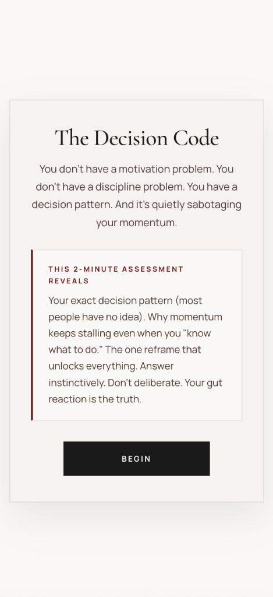
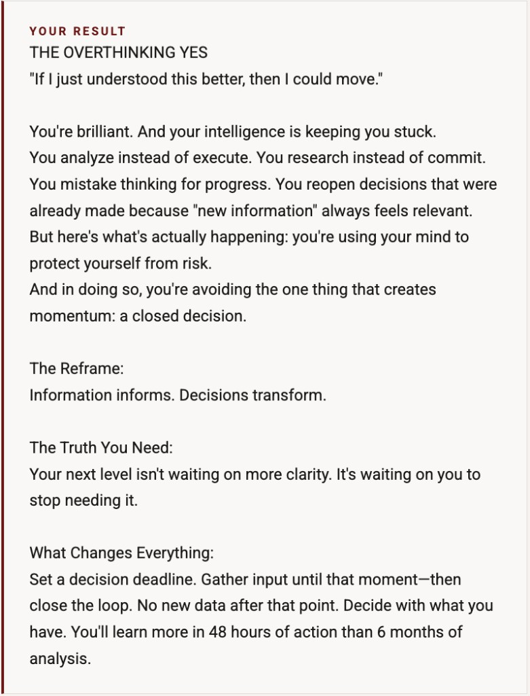

But something is keeping you from moving. The Decision Code will show you why. Quick. Clear. And you'll know exactly what to do next.


You already know the move. Something keeps costing you the follow-through.
You're not missing information. You're stalling on the decision you already sense. Open loops and half-commitments leak energy before you fully notice.
You can name the next move; postponing it has become the pattern. What you actually want is your self-trust and your momentum back. Without another layer of content to consume.
Three moves. One honest read on how you actually decide under pressure.
See how you actually decide under pressure. Not how you think you do.
The specific point where Decision Drag takes hold and follow-through slips.
One clear action. So you can move, not just think about moving.
Setting the frame before you step in.
Four things, all in under two minutes.
How you stall or move. Answer fast. First instinct counts.
What Decision Drag is doing under the surface when you hesitate.
Something you can act on immediately. Not a laundry list.
Your read delivered to the email you provide. Yours to keep.

"When you're ready to go deeper than a diagnostic, implementation lives in the Movement."